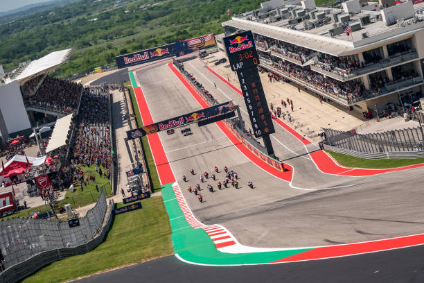
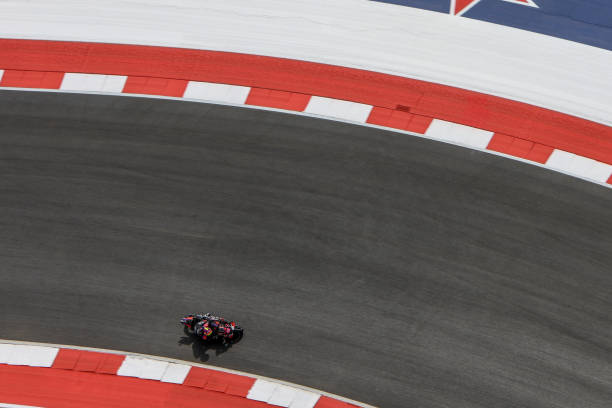
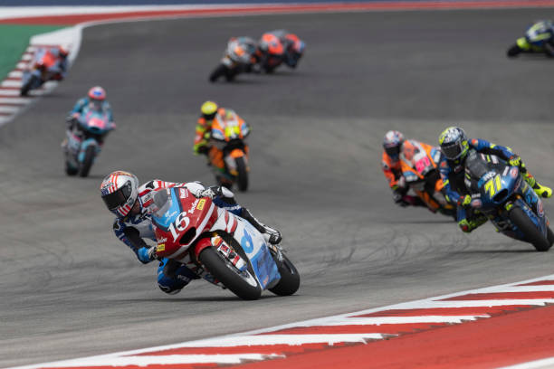

Información del Circuito: Circuit of the Americas
Datos del Circuito
- Nombre
- Circuit of the Americas
- Longitud
- 5513 metros
- Anchura
- 15 metros
- Localidad
- Austin
- País
- Estados Unidos
- Patrocinador
- Red Bull
Información de la Carrera
- Fecha
- 2025-04-13
- Hora
- 21:00:00
- Número de Vueltas
- 20
Resultado de la Carrera
- Ganador
- Francesco Bagnaia
- Tiempo
- PT39M0.191S
Clasificación Mundial
- Marc Márquez - 545 puntos
- Álex Márquez - 379 puntos
- Marco Bezzecchi - 282 puntos
Galería Multimedia
Fotografías



Videos